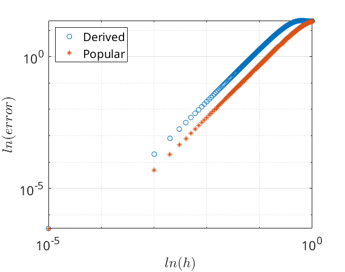
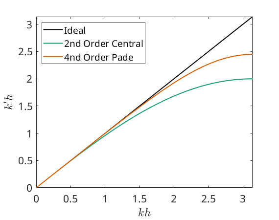

Contents
Preparation of the Workspace
clear all
clc
close all
Preperation of Figures
fontsize = 16;
set(0,'DefaultTextInterpreter','latex')
set(0,'DefaultAxesFontSize',fontsize)
set(0,'DefaultLegendFontSize',fontsize)
colors = ["#000000","#1b9e77","#d95f02","#7570b3","#0099FF","#FF0000"];
problem 1
del_h = linspace(1,1e-5,1e3);
x = 1.5;
exact = -25*sin(5*x);
for i = 1:length(del_h)
der_app(i) = (sin(5*(x-2*del_h(i))) - 2* sin(5*(x)) + sin(5*(x+2*del_h(i)))) / (4*del_h(i)^2);
pop_app(i) = (sin(5*(x-1*del_h(i))) - 2* sin(5*(x)) + sin(5*(x+1*del_h(i)))) / (del_h(i)^2);
der_err(i) = abs(der_app(i)-exact);
pop_err(i) = abs(pop_app(i)-exact);
end
figure
loglog(del_h,der_err,'o')
hold on
loglog(del_h,pop_err,'*')
legend("Derived", "Popular",Location="northwest")
grid on
xlabel('$ln(h)$')
ylabel('$ln(error)$')

problem 2
syms h
A = [ 1 1 1 1; -h 0 h 2*h; h^2/2 0 h^2/2 2*h^2; -h^3/6 0 h^3/6 (2*h)^3/6];
B = [0;-1;0;0];
X = linsolve(A,B)
X =
1/(3*h)
1/(2*h)
-1/h
1/(6*h)
problem 3
syms h a
A2 = [1 1 1 1; 0 h 2*h 3*h; 0 h^2/2 2*h^2 (3*h)^2/2;0 h^3/6 (2*h)^3/6 (3*h)^3/6];
B2 = [0;-1-a;-a*h;-a*h^2/2];
X2 = linsolve(A2,B2)
syms h
A3 = [0 1 1 1 1; 1 0 h 2*h 3*h; h 0 h^2/2 2*h^2 (3*h)^2/2; h^2/2 0 h^3/6 (2*h)^3/6 (3*h)^3/6; h^3/6 0 h^4/24 (2*h)^4/24 (3*h)^4/24];
B3 = [0;-1;0;0;0];
X3 = linsolve(A3,B3)
X2 =
(2*a + 11)/(6*h)
(a - 6)/(2*h)
-(2*a - 3)/(2*h)
(a - 2)/(6*h)
X3 =
3
17/(6*h)
-3/(2*h)
-3/(2*h)
1/(6*h)
problem 4
kh = linspace(0,2*pi);
k_prime_square = 2-2*cos(kh);
k_prime_square_2 = 12*(2-2*cos(kh))./(10+2*cos(kh));
figure
plot(kh,kh,Color=colors(1),LineWidth=1.5)
hold on
plot(kh,k_prime_square.^.5,Color=colors(2),LineWidth=1.5)
plot(kh,k_prime_square_2.^.5,Color=colors(3),LineWidth=1.5)
xlim([0,pi])
legend("Ideal","2nd Order Central","4nd Order Pade",Location="northwest")
xlabel("$kh$")
ylabel("$k'h$")
syms h
A4 = [0 0 1 1 1; 0 0 -h 0 h; 1 1 h^2/2 0 h^2/2; -h h -h^3/6 0 h^3/6; h^2/2 h^2/2 h^4/24 0 h^4/24];
B4 = [0; 0; -1; 0; 0];
X4 = linsolve(A4,B4)
X4 =
1/10
1/10
-6/(5*h^2)
12/(5*h^2)
-6/(5*h^2)
